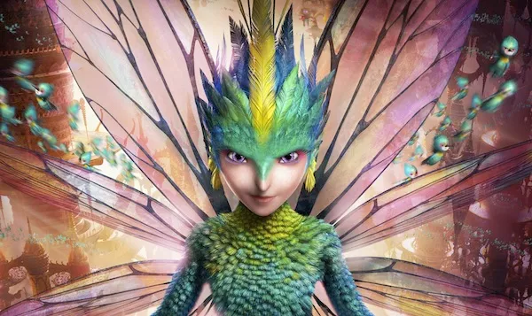

About Toothiana
Toothiana is the Tooth Fairy and the Guardian of Memories in Rise of the Guardians from a movie who collects children's baby teeth where she leaves behind money as their gifts. She guards all the teeth she collects in her palace.

Toothiana
Toothiana’s characteristics
- Tooth has the ability to freely fly (wings), as well as hover in place without tiring out. However, when the amount of belief in the world is weakened, so is Tooth's ability to fly. Notably, when children stop believing, her feathers start to fall out, although she is not badly affected at that moment besides that.
- Tooth is able to sword fight, and her wings, as seen in the movie, were used as blades to destroy Pitch's nightmares as she twisted herself like a tornado.
- Tooth is also able to speak every language and communicate with many different beings.
- As Tooth is the Guardian of Memories, she appears to have an insight on the Memories of Childhood as the teeth she and her fairies collect carry the most precious memories of childhood. As she said to Jack Frost, they watch over the children and their memories, and when someone needs to remember what's important, they bring those memories back to help them.
- Tooth can use her fleet of mini-fairies to attack. Also, in the novelization, it says that Tooth uses her wings to 'slice' through the Nightmare creatures. Her wings may serve as replacements for her swords.

Toothiana